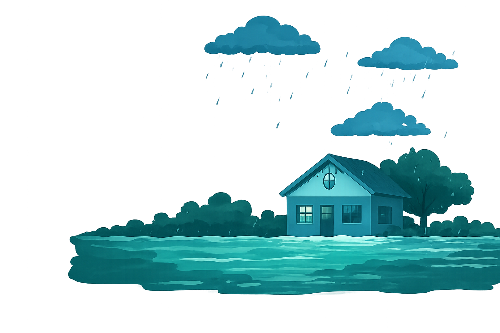
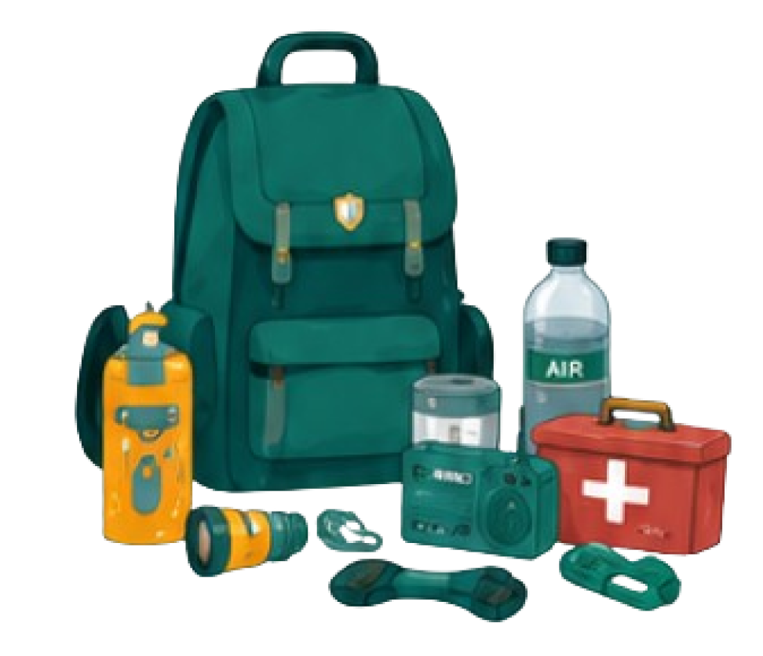
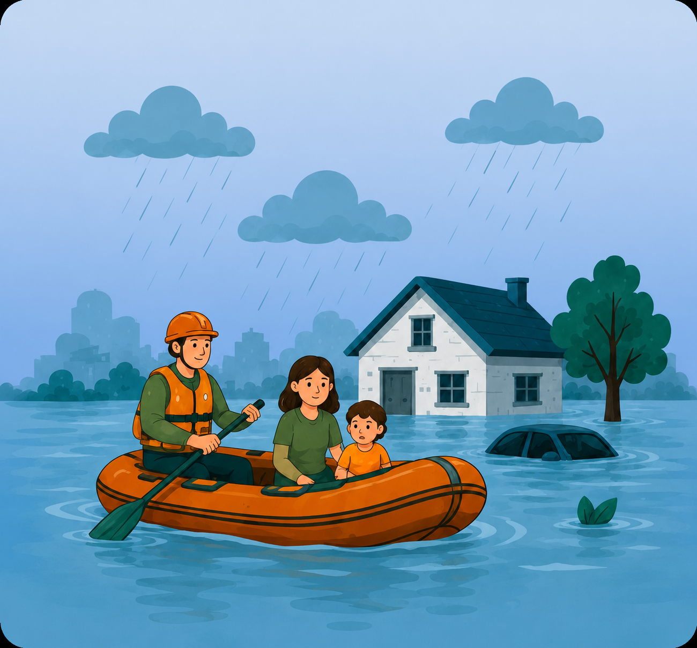
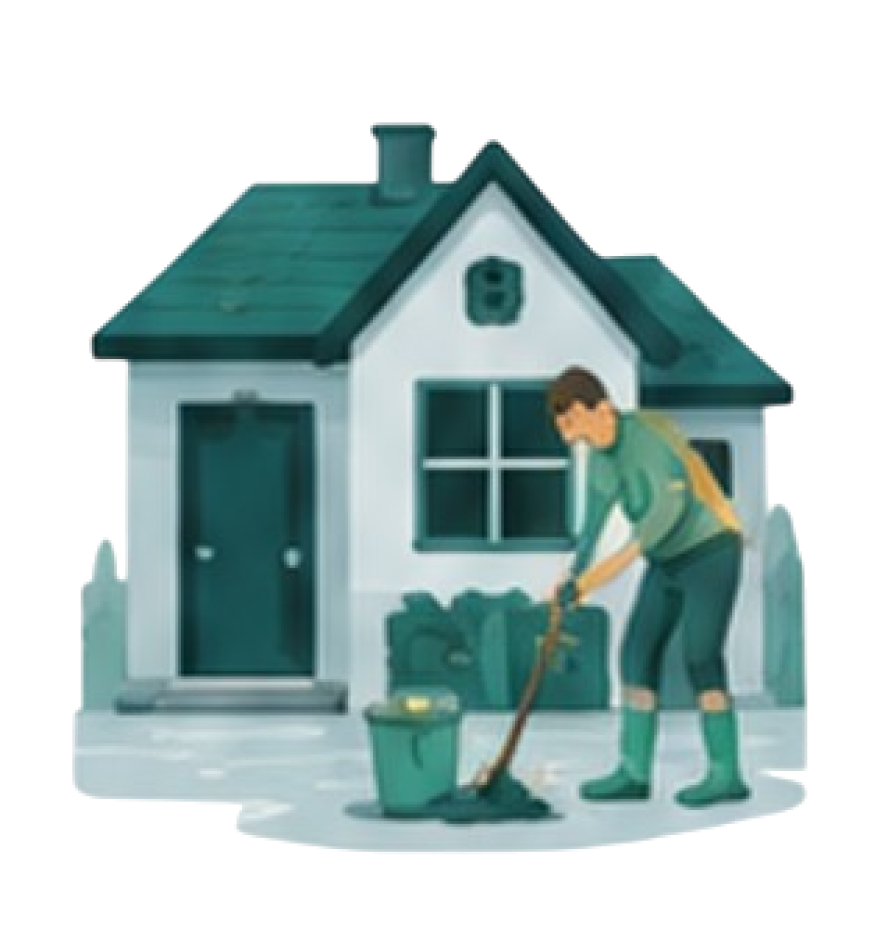

Edukasi Banjir
Edukasi untuk meningkatkan kesiapsiagaan
dan mengurangi risiko saat terjadi banjir.

Edukasi untuk meningkatkan kesiapsiagaan
dan mengurangi risiko saat terjadi banjir.
Kenali langkah-langkah yang tepat untuk melindungi diri dan
keluarga sebelum, saat, dan setelah banjir

Persiapan yang matang dapat membantu mengurangi risiko dan dampak banjir.
Lakukan tindakan yang tepat untuk menjaga keselamatan diri saat banjir berlangsung.


Langkah pemulihan yang tepat membantu memulihkan kondisi dan mencegah risiko lanjutan.